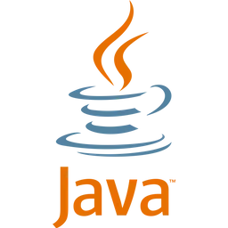
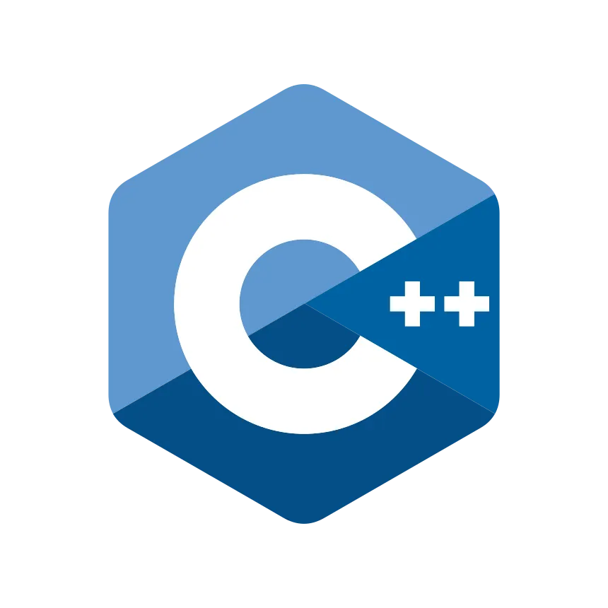
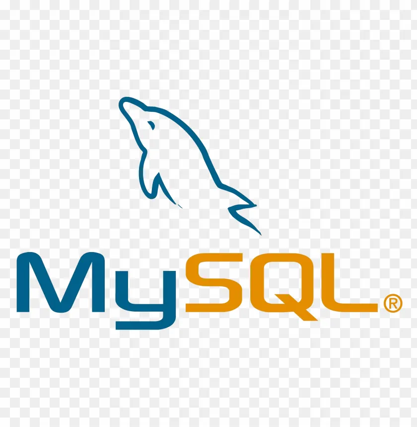
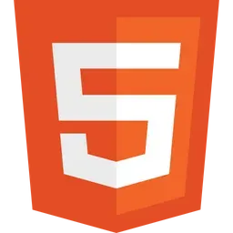
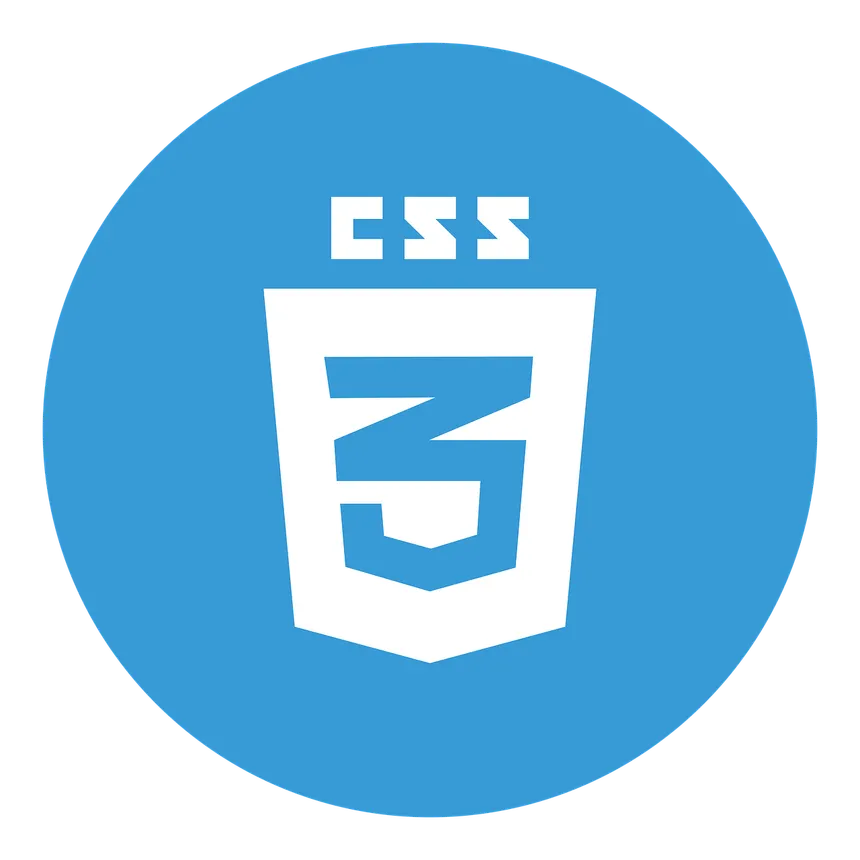
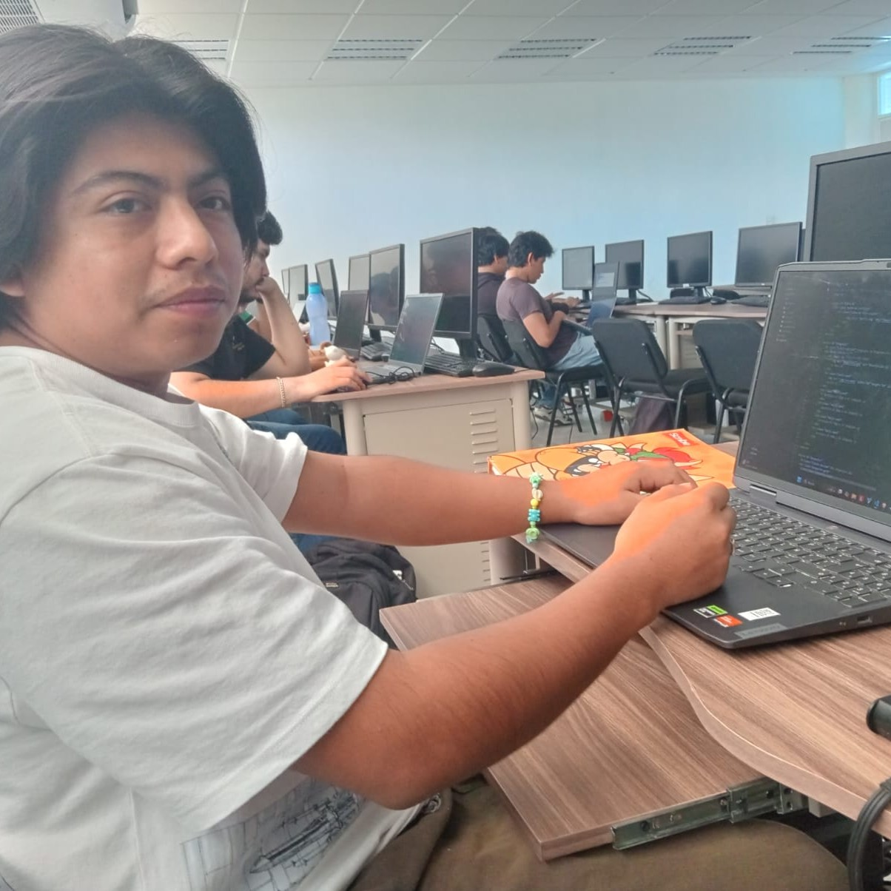
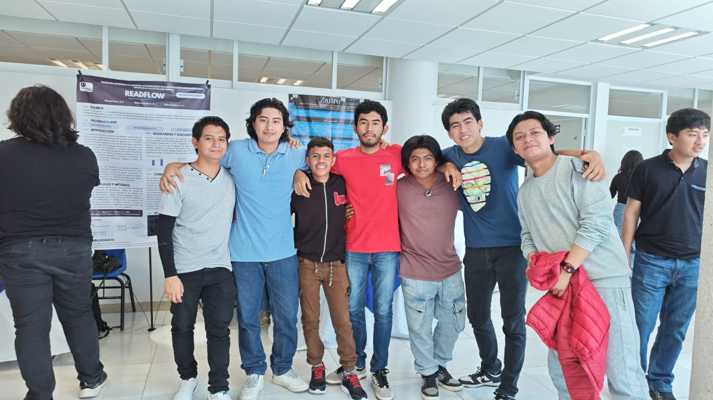

Lenguajes de Programación

Java

C++

JavaScript

MySQL

HTML

CSS
Hola, soy Erick Gutiérrez
Soy estudiante de Ingeniería en Tecnologías de la Información e Innovación Digital en la UPChiapas. Me gusta mucho crear software, explorar nuevas tecnologías y construir soluciones prácticas a través del código.


Java

C++
JavaScript

MySQL

HTML

CSS
Plataforma web que conecta a guías de deportes de aventura (pesca, senderismo, etc.) con entusiastas en Chiapas. El sistema centraliza la gestión de eventos y busca dar visibilidad a estas actividades, promoviendo un estilo de vida saludable y la conservación del entorno natural.
Plataforma de comercio electrónico que simula un entorno de compra completo. Incluye selección de productos, carrito de compras y flujo de pago digital. Este proyecto académico fue desplegado en AWS, demostrando habilidades en desarrollo full-stack y despliegue en la nube.

Asistencia a la clausura y presentación final de soluciones tecnológicas, fomentando el networking e intercambio de ideas con la comunidad de desarrollo.

Participación como asistente activo en la exhibición académica, analizando propuestas, arquitecturas y debatiendo soluciones con otros desarrolladores.
Cisco Networking Academy
Cisco Networking Academy
Cisco Networking Academy